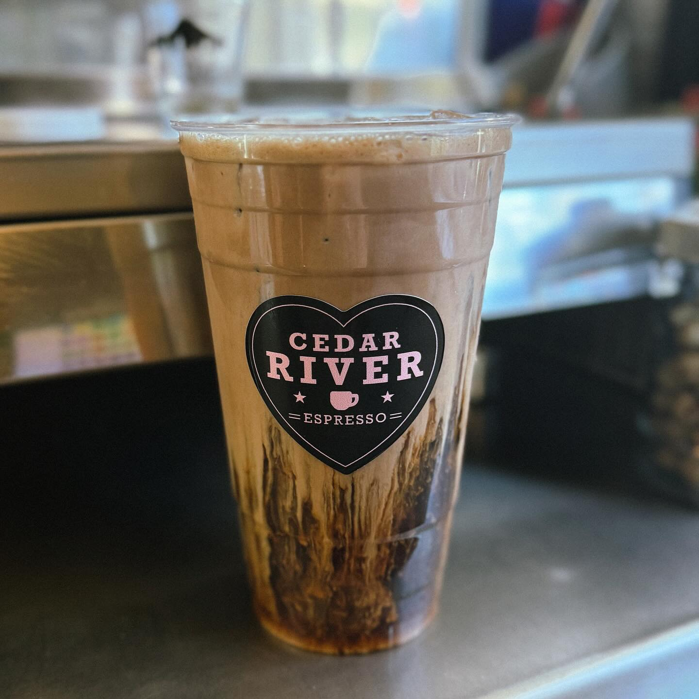
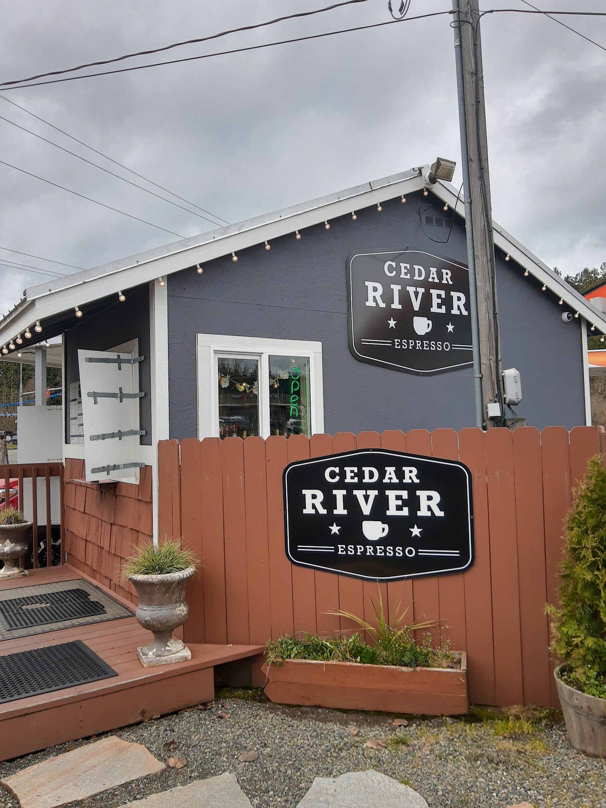
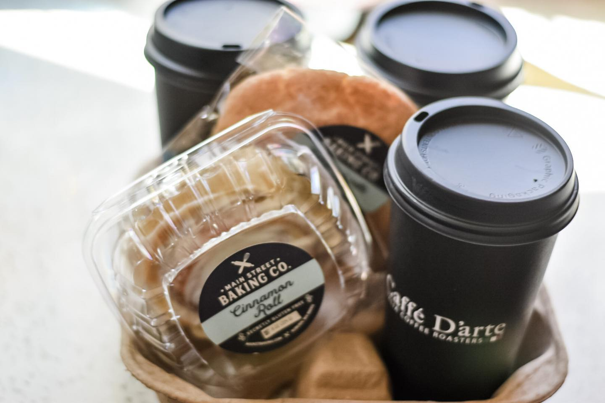
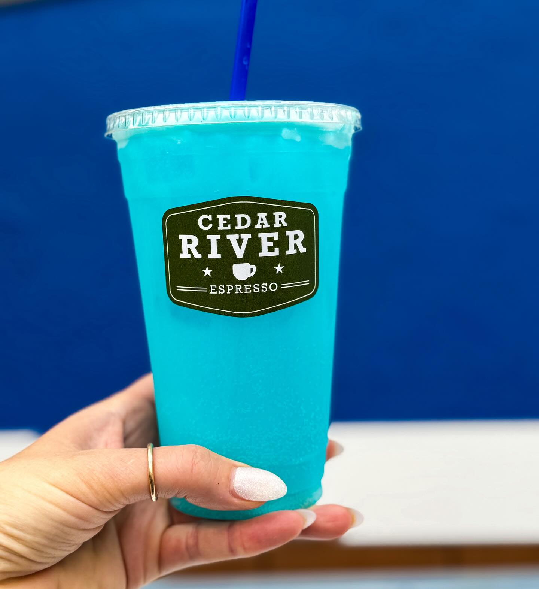
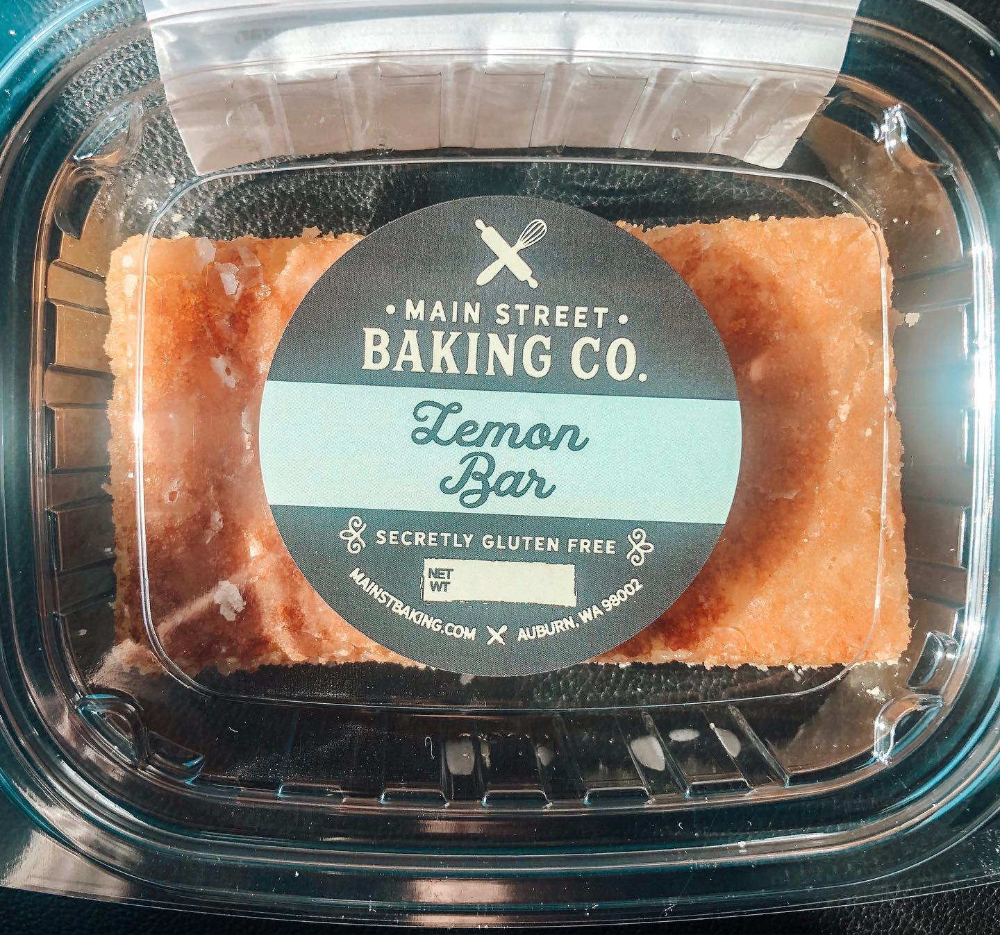
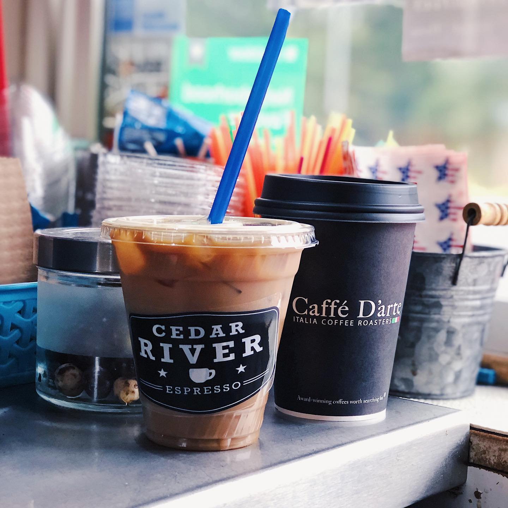
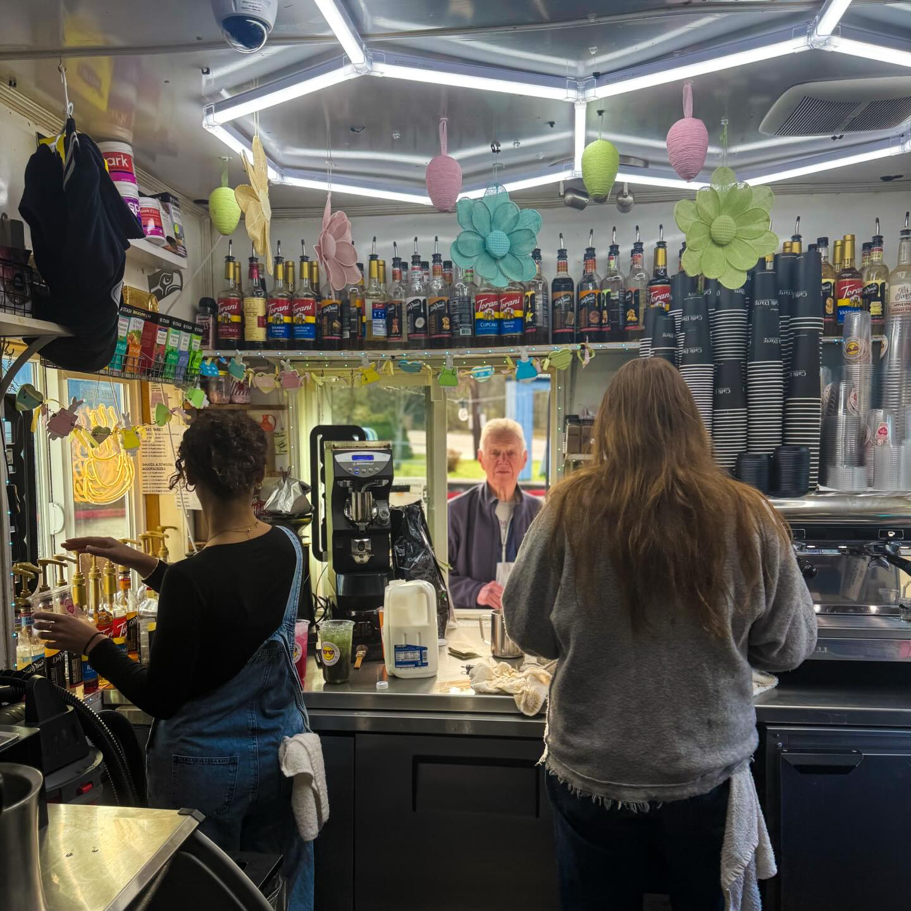

Your East Renton coffee stop
Cedar River
Espresso
A little pause.
A brighter day.
Your favorite coffee.
A familiar window.
Something good for the road.
Made for the way your day unfolds.
When to find us
Early starts.
Easy stops.
See today’s hours
16402 SE 128th St
Renton, WA 98059
Open in Maps ↗
- Monday4:30 AM – 6:00 PM
- Tuesday4:30 AM – 6:00 PM
- Wednesday4:30 AM – 6:00 PM
- Thursday4:30 AM – 6:00 PM
- Friday4:30 AM – 6:00 PM
- Saturday6:00 AM – 6:00 PM
- Sunday7:00 AM – 5:00 PM

At the window
Your usual.
Or your new favorite.
Real coffee. Plenty of personality.
Start with an espresso classic, brighten things up with a colorful cold drink, or take breakfast along for the ride.
Your coffee, your way
Caffè D’Arte coffee, poured into a cup that’s unmistakably Cedar River.
- Latte · hot or iced
- Mocha · white chocolate mocha
- Americano
- Caramel macchiato
- Cold brew
- Chai tea · hot chocolate
Bright & refreshing
Pick your flavor and make the drive a little more colorful.
- Lotus energy drinks
- Red Bull drinks
- Italian sodas
- Strawberry · mango · peach smoothies
- Lemonade
- Thai iced tea
Blended & creamy
A rich coffee blend or a fruit-filled shake for the road.
- Espresso · mocha · caramel fraps
- Vanilla · white chocolate fraps
- Orange cream frap
- PB Fit protein shake
- Java Muscle protein shake
- Berry Body Fuel protein shake
Breakfast & little treats
Breakfast sandwiches and grab-and-go bakery options. Ask about today’s selection.
- Sausage, egg & cheddar bagel
- Bacon, egg & cheddar English muffin
- Canadian bacon, egg & provolone croissant
- Muffin tops · Belgian waffles
- Iced lemon loaf · cookies
- Gluten-free protein pucks
A taste of the stand
Small things.
Good mornings.



Find your sip
What sounds good today?
Choose a mood. Take a look.


Your neighborhood coffee stop
Made for the
day ahead.
A little stand with a lot to choose from.
Cedar River has been part of the East Renton Highlands coffee routine since 2006. Caffè D’Arte espresso, a colorful lineup of drinks, and breakfast to go keep the window busy.
Whether it’s your regular latte or a flavor you’ve never tried, pull through and find something for the road.
See what’s new ↗Around the neighborhood
A familiar stop,
in their own words.
4.4★★★★☆
On Google
Read the latest experiences from the people who stop at our window.
Read the reviews ↗Before you swing by
Let’s make it
a good stop.
Call for today’s options, or follow the stand for the latest drinks and seasonal specials.
On your way
A little stop.
A better start.
We’ll see you at the window.